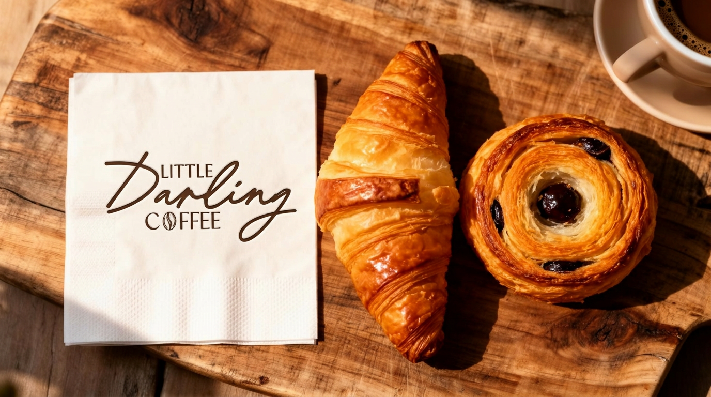
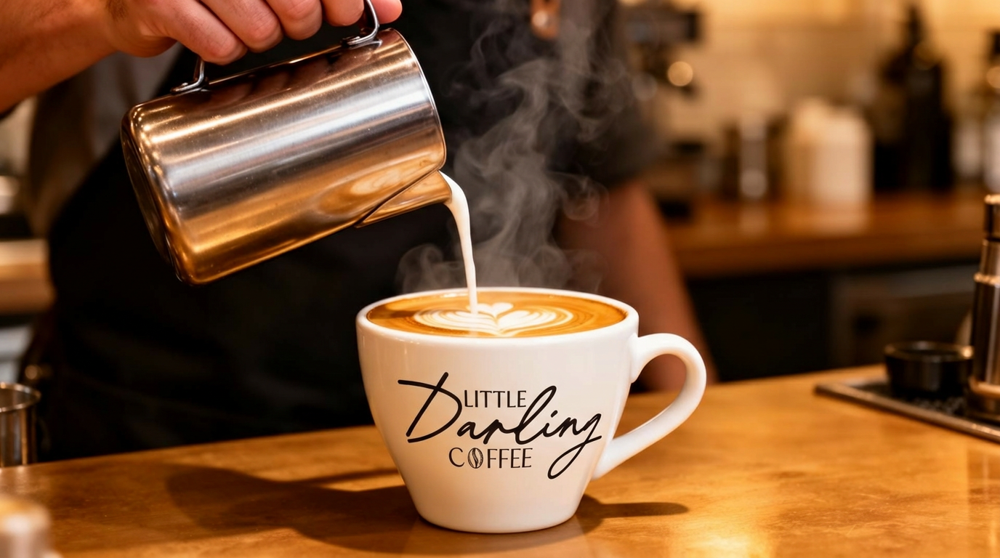
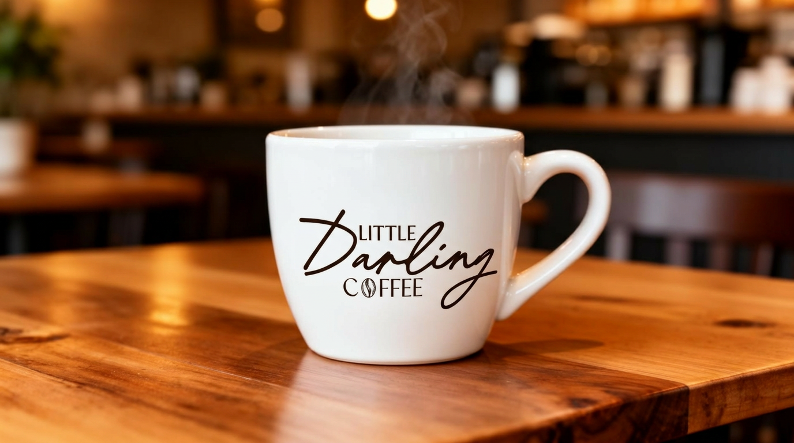

Emotional Coffee Brand Identity
Little Darling Coffee is a brand identity project focused on creating a warm, intimate, and emotionally driven coffee experience. The goal was to design a brand that feels personal and inviting, transforming everyday coffee moments into something meaningful and memorable.
Tools & Technologies
"Many coffee brands focus on being modern or minimalist, but often lack emotional connection. The challenge was to create a brand that felt genuinely different."
To define the direction, I explored:
Methods
Key Insights
The design process focused on storytelling and emotion:
Steps
Goal
The goal was to create a brand that feels crafted, not manufactured.
The final identity combines:
The result is a brand that feels intimate, cozy, and authentic.
The brand was applied across coffee packaging, cups and takeaway materials, and in-store visuals. Each application reinforces the emotional experience of the brand.



Key Results
Strong emotional connection through design
Cohesive and recognizable brand identity
Elevated perception of warmth and authenticity
Design Impact
Next Project
Lattente View Project →